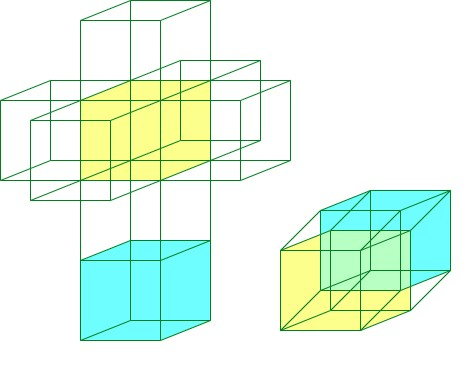
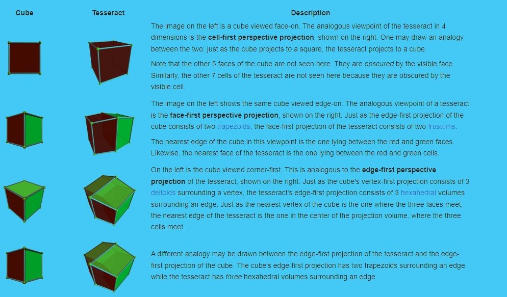
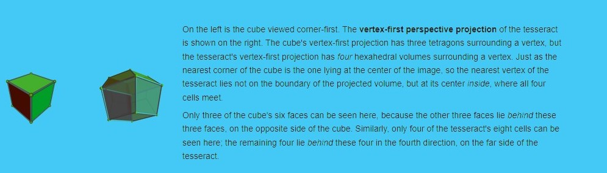
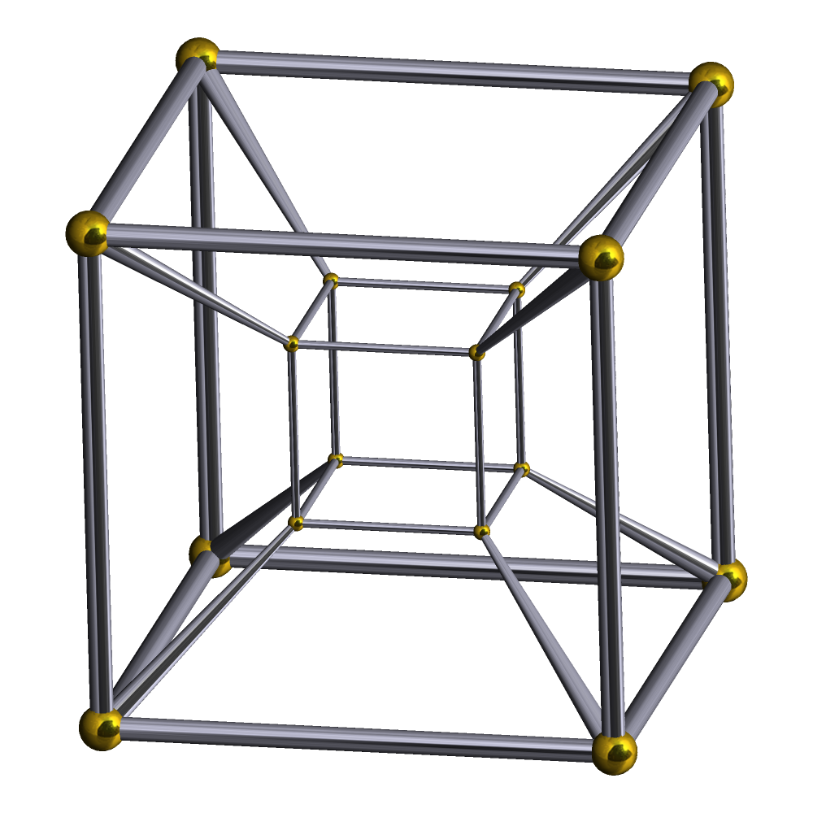
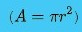
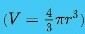
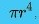
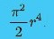

To understand the nature of four-dimensional space, a device called dimensional analogy is commonly employed. Dimensional analogy is the study of how (n − 1) dimensions relate to n dimensions, and then inferring how n dimensions would relate to (n + 1) dimensions.[19]

A net of a tesseract
The dimensional analogy was used by Edwin Abbott Abbott in the book Flatland, which narrates a story about a square that lives in a two-dimensional world, like the surface of a piece of paper. From the perspective of this square, a three-dimensional being has seemingly god-like powers, such as ability to remove objects from a safe without breaking it open (by moving them across the third dimension), to see everything that from the two-dimensional perspective is enclosed behind walls, and to remain completely invisible by standing a few inches away in the third dimension.
By applying dimensional analogy, one can infer that a four-dimensional being would be capable of similar feats from the three-dimensional perspective. Rudy Rucker illustrates this in his novel Spaceland, in which the protagonist encounters four-dimensional beings who demonstrate such powers.
As a three-dimensional object passes through a two-dimensional plane, two-dimensional beings in this plane would only observe a cross-section of the three-dimensional object within this plane. For example, if a sphere passed through a sheet of paper, beings in the paper would see first a single point. A circle gradually grows larger, until it reaches the diameter of the sphere, and then gets smaller again, until it shrinks to a point and disappears. The 2D beings would not see a circle in the same way as three-dimensional beings do; rather, they only see a one-dimensional projection of the circle on their 1D "retina". Similarly, if a four-dimensional object passed through a three-dimensional (hyper) surface, one could observe a three-dimensional cross-section of the four-dimensional object. For example, a hypersphere would appear first as a point, then as a growing sphere (until it reaches the "hyperdiameter" of the hypersphere), with the sphere then shrinking to a single point and then disappearing.[20] This means of visualizing aspects of the fourth dimension was used in the novel Flatland and also in several works of Charles Howard Hinton.[8]: 11–14 And, in the same way, three-dimensional beings (such as humans with a 2D retina) can see all the sides and the insides of a 2D shape simultaneously, a 4D being could see all faces and the inside of a 3D shape at once with their 3D retina.
A useful application of dimensional analogy in visualizing higher dimensions is in projection. A projection is a way of representing an n-dimensional object in n − 1 dimensions. For instance, computer screens are two-dimensional, and all the photographs of three-dimensional people, places, and things are represented in two dimensions by projecting the objects onto a flat surface. By doing this, the dimension orthogonal to the screen (depth) is removed and replaced with indirect information. The retina of the eye is also a two-dimensional array of receptors but the brain can perceive the nature of three-dimensional objects by inference from indirect information (such as shading, foreshortening, binocular vision, etc.). Artists often use perspective to give an illusion of three-dimensional depth to two-dimensional pictures. The shadow, cast by a fictitious grid model of a rotating tesseract on a plane surface, as shown in the figures, is also the result of projections.
Similarly, objects in the fourth dimension can be mathematically projected to the familiar three dimensions, where they can be more conveniently examined. In this case, the 'retina' of the four-dimensional eye is a three-dimensional array of receptors. A hypothetical being with such an eye would perceive the nature of four-dimensional objects by inferring four-dimensional depth from indirect information in the three-dimensional images in its retina.
The perspective projection of three-dimensional objects into the retina of the eye introduces artifacts such as foreshortening, which the brain interprets as depth in the third dimension. In the same way, perspective projection from four dimensions produces similar foreshortening effects. By applying dimensional analogy, one may infer four-dimensional "depth" from these effects.
As an illustration of this principle, the following sequence of images compares various views of the three-dimensional cube with analogous projections of the four-dimensional tesseract into three-dimensional space.
 
A concept closely related to projection is the casting of shadows.
If a light is shone on a three-dimensional object, a two-dimensional shadow is cast. By dimensional analogy, light shone on a two-dimensional object in a two-dimensional world would cast a one-dimensional shadow, and light on a one-dimensional object in a one-dimensional world would cast a zero-dimensional shadow, that is, a point of non-light. Going the other way, one may infer that light shining on a four-dimensional object in a four-dimensional world would cast a three-dimensional shadow.

If the wireframe of a cube is lit from above, the resulting shadow on a flat two-dimensional surface is a square within a square with the corresponding corners connected. Similarly, if the wireframe of a tesseract were lit from "above" (in the fourth dimension), its shadow would be that of a three-dimensional cube within another three-dimensional cube suspended in midair (a "flat" surface from a four-dimensional perspective). (Note that, technically, the visual representation shown here is a two-dimensional image of the three-dimensional shadow of the four-dimensional wireframe figure.)
The dimensional analogy also helps in inferring basic properties of objects in higher dimensions. For example, two-dimensional objects are bounded by one-dimensional boundaries: a square is bounded by four edges. Three-dimensional objects are bounded by two-dimensional surfaces: a cube is bounded by 6 square faces. By applying dimensional analogy, one may infer that a four-dimensional cube, known as a tesseract, is bounded by three-dimensional volumes. And indeed, this is the case: mathematics shows that the tesseract is bounded by 8 cubes. Knowing this is key to understanding how to interpret a three-dimensional projection of the tesseract. The boundaries of the tesseract project to volumes in the image, not merely two-dimensional surfaces.
People have a spatial self-perception as beings in a three-dimensional space, but are visually restricted by one less dimension: the eye sees the world as a projection to two dimensions, on the surface of the retina. Assuming a four-dimensional being were able to see the world in projections to a hypersurface, also just one dimension less, i.e., to three dimensions, it would be able to see, e.g., all six faces of an opaque box simultaneously, and in fact, what is inside the box at the same time, just as people can see all four sides and simultaneously the interior of a rectangle on a piece of paper.[citation needed] The being would be able to discern all points in a 3-dimensional subspace simultaneously, including the inner structure of solid 3-dimensional objects, things obscured from human viewpoints in three dimensions on two-dimensional projections. Brains receive images in two dimensions and use reasoning to help picture three-dimensional objects.
Reasoning by analogy from familiar lower dimensions can be an excellent intuitive guide, but care must be exercised not to accept results that are not more rigorously tested. For example, consider the formulas for the area enclosed by a circle in two dimensions

and the volume enclosed by a sphere in three dimensions

One might guess that the volume enclosed by the sphere in four-dimensional space is a rational multiple of

but the correct volume is

The volume in all dimensions is computable from a recurrence relation connecting dimension n to dimension n - 2.